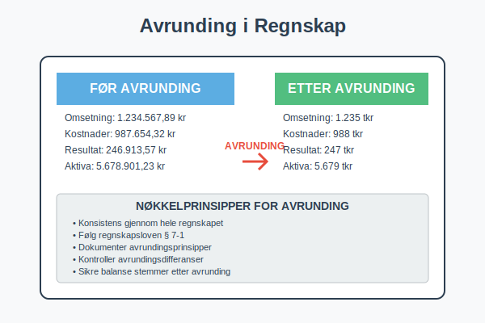
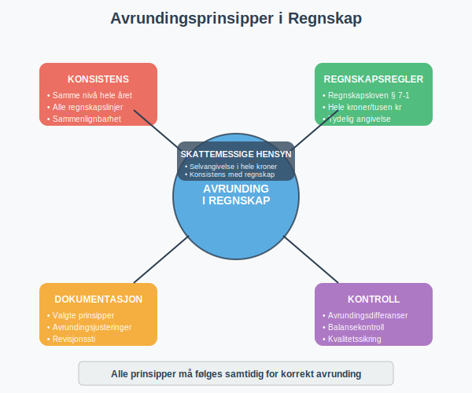
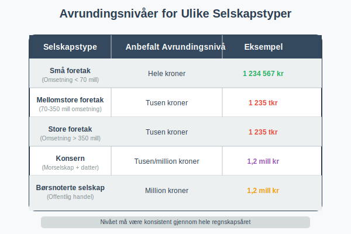
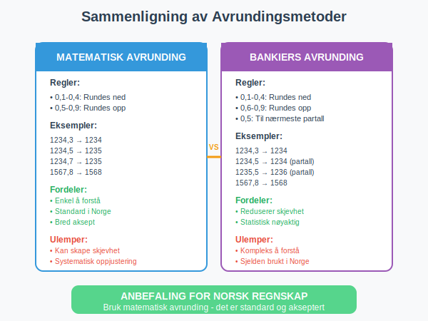
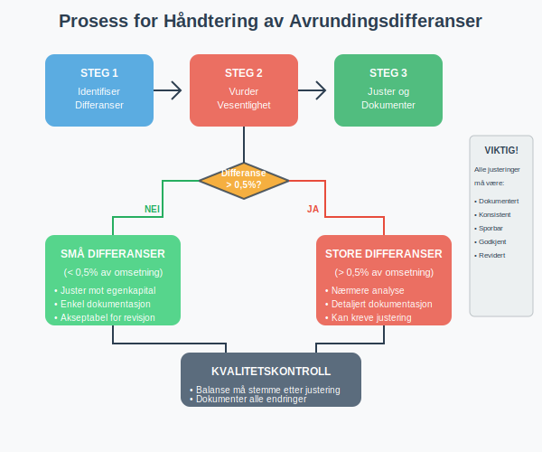
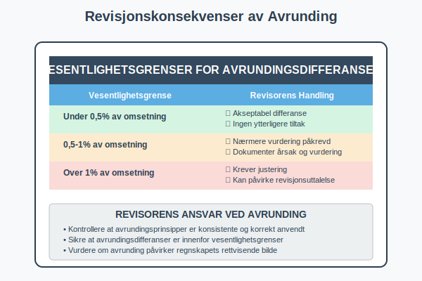
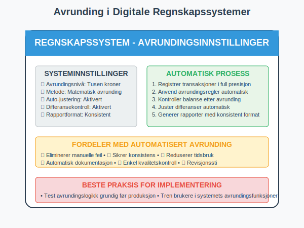
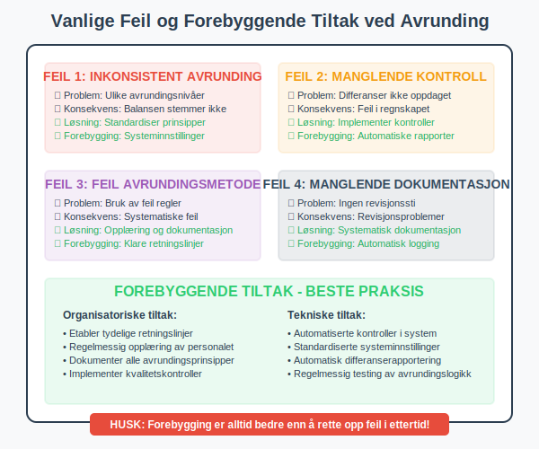
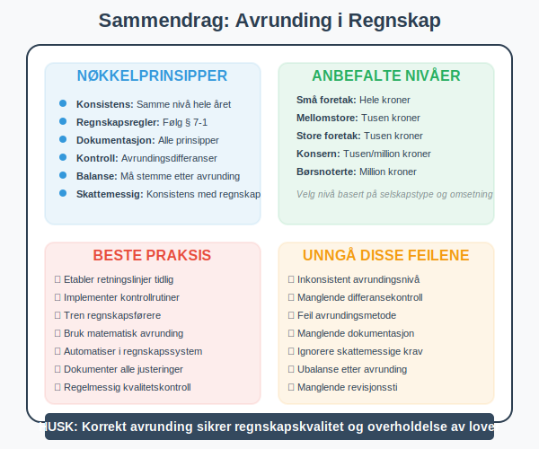

Avrunding i regnskap er et viktig prinsipp som handler om hvordan tall skal presenteres og behandles i regnskapsføring. Korrekt avrunding sikrer konsistens, klarhet og overholdelse av regnskapsregler.

Hva er Avrunding i Regnskap?
Avrunding i regnskap refererer til prosessen med å forenkle tall ved å redusere antall desimaler eller fjerne mindre betydningsfulle sifre. Dette gjøres for å:
- Forbedre lesbarhet av regnskapet
- Sikre konsistens i presentasjon
- Følge regnskapsregler og standarder
- Redusere kompleksitet i regnskapsrapporter
Avrunding påvirker både balansen og resultatregnskapet, og må gjøres systematisk og konsistent.

Regnskapsregler for Avrunding
Norske Regnskapsstandarder
I Norge følger avrunding i regnskap spesifikke regler:
Regnskapsloven § 7-1
- Beløp skal oppgis i hele kroner eller i tusen kroner
- Konsistent avrunding gjennom hele regnskapet
- Tydelig angivelse av avrundingsnivå
Avrundingsnivåer
| Selskapstype | Anbefalt Avrundingsnivå | Eksempel |
|---|---|---|
| Små foretak | Hele kroner | 1 234 567 kr |
| Mellomstore foretak | Tusen kroner | 1 235 tkr |
| Store foretak | Tusen kroner | 1 235 tkr |
| Konsern | Tusen/million kroner | 1,2 mill kr |

Avrundingsmetoder
Matematisk Avrunding (Vanligste)
Matematisk avrunding følger standard matematiske regler:
- 0,1-0,4: Rundes ned
- 0,5-0,9: Rundes opp
Eksempler på Matematisk Avrunding
| Opprinnelig beløp | Avrundet til hele kroner | Avrundet til tusen kroner |
|---|---|---|
| 1 234,3 kr | 1 234 kr | 1 tkr |
| 1 234,5 kr | 1 235 kr | 1 tkr |
| 1 234,7 kr | 1 235 kr | 1 tkr |
| 1 567,8 kr | 1 568 kr | 2 tkr |
Bankiers Avrunding
Bankiers avrunding (også kalt “round half to even”):
- Ved 0,5: Rundes til nærmeste partall
- Reduserer systematisk skjevhet i store datasett
- Brukes sjelden i norsk regnskap

Praktisk Gjennomføring av Avrunding
Konsistens i Regnskapet
Samme Avrundingsnivå
- Alle poster må bruke samme avrundingsnivå
- Balanse må stemme etter avrunding
- Kontroll av avrundingsdifferanser
Avrundingsdifferanser
Når avrunding skaper differanser:
- Små differanser: Justeres mot egenkapital
- Større differanser: Krever nærmere analyse
- Dokumentasjon: Alle justeringer må dokumenteres
Regnskapsføring av Avrundingsjusteringer
Eksempel på avrundingsjustering:
Før avrunding:
- Omsetning: 1 234 567,80 kr
- Kostnader: 987 654,30 kr
- Resultat: 246 913,50 kr
Etter avrunding til tusen kroner:
- Omsetning: 1 235 tkr
- Kostnader: 988 tkr
- Resultat: 247 tkr
Avrundingsjustering: 0,50 kr til egenkapital

Skattemessige Konsekvenser
Skatteetaten og Avrunding
Selvangivelse
- Skatteetaten krever oppgave i hele kroner
- Avrunding til nærmeste krone er påkrevd
- Konsistens mellom regnskap og selvangivelse
Moms og Avrunding
- Momsoppgave skal oppgis i hele kroner
- Avrunding av hver linje før summering
- Spesielle regler for momskompensasjon
Revisjonskonsekvenser
Revisorens Ansvar
- Kontrollere avrundingsprinsipper
- Sikre konsistens i anvendelse
- Vurdere vesentlighet av avrundingsdifferanser
| Vesentlighetsgrense | Handling |
|---|---|
| Under 0,5% av omsetning | Akseptabel |
| 0,5-1% av omsetning | Nærmere vurdering |
| Over 1% av omsetning | Krever justering |

Digitale Regnskapssystemer og Avrunding
Automatisk Avrunding
Moderne regnskapssystemer håndterer avrunding automatisk:
Systeminnstillinger
- Avrundingsnivå kan settes globalt
- Automatiske justeringer for differanser
- Rapportgenerering med konsistent avrunding
Kontrollrutiner
- Balansekontroll etter avrunding
- Differanserapporter for oppfølging
- Historisk sporing av avrundingsjusteringer
Beste Praksis for Digitale Systemer
- Sett avrundingsregler tidlig i implementeringen
- Test avrundingslogikk grundig
- Dokumenter avrundingsprinsipper i systemdokumentasjon
- Tren brukere i avrundingshåndtering

Internasjonale Perspektiver
IFRS og Avrunding
International Financial Reporting Standards (IFRS) har egne retningslinjer:
IAS 1 - Presentasjon av Finansregnskap
- Materialitet skal vurderes ved avrunding
- Konsistent presentasjon kreves
- Tydelig angivelse av avrundingsnivå
Sammenligning med Norske Regler
| Aspekt | Norske regler | IFRS |
|---|---|---|
| Avrundingsnivå | Hele kroner/tusen | Fleksibelt |
| Konsistens | Påkrevd | Påkrevd |
| Dokumentasjon | Detaljert | Prinsippbasert |
Praktiske Eksempler og Case
Case 1: Småbedrift med Enkel Struktur
Bakgrunn: Enkeltpersonforetak med omsetning på 850 000 kr
Avrundingsstrategi:
- Hele kroner i alle regnskapslinjer
- Månedlig kontroll av avrundingsdifferanser
- Enkel dokumentasjon av avrundingsprinsipper
Resultat:
- Konsistent presentasjon gjennom året
- Minimale avrundingsdifferanser (under 50 kr totalt)
- Enkel revisjon og godkjenning
Case 2: Mellomstor Bedrift med Kompleks Struktur
Bakgrunn: AS med omsetning på 25 millioner kr og flere datterselskap
Utfordringer:
- Konsolidering av regnskaper
- Valutaomregning og avrunding
- Konsernelimineringer med avrundingseffekter
Løsning:
- Tusen kroner som standard avrundingsnivå
- Sentralisert avrundingskontroll
- Automatiserte kontrollrutiner

Vanlige Feil og Fallgruver
Typiske Avrundingsfeil
Inkonsistent Avrunding
- Problem: Ulike avrundingsnivåer i samme regnskap
- Konsekvens: Balansen stemmer ikke
- Løsning: Standardiser avrundingsprinsipper
Manglende Kontroll av Differanser
- Problem: Avrundingsdifferanser ikke identifisert
- Konsekvens: Feil i regnskapet
- Løsning: Implementer kontrollrutiner
Feil Avrundingsmetode
- Problem: Bruk av feil avrundingsregler
- Konsekvens: Systematiske feil
- Løsning: Opplæring og dokumentasjon
Forebyggende Tiltak
- Tydelige retningslinjer for avrunding
- Regelmessig opplæring av regnskapsførere
- Automatiserte kontroller i regnskapssystem
- Dokumentasjon av alle avrundingsprinsipper

Fremtidige Utviklingstrender
Teknologiske Utviklinger
Kunstig Intelligens og Avrunding
- Automatisk optimalisering av avrundingsstrategier
- Prediktiv analyse av avrundingseffekter
- Intelligent kvalitetskontroll
Blockchain og Avrunding
- Transparent avrundingshistorikk
- Uforanderlig dokumentasjon av avrundingsprinsipper
- Automatiserte smart contracts for avrunding
Regulatoriske Endringer
Kommende Endringer i Regnskapsloven
- Økt fokus på digitaliseringskrav
- Standardisering av avrundingsprinsipper
- Forbedret rapporteringskvalitet
Konklusjon og Anbefalinger
Avrunding i regnskap er et fundamentalt prinsipp som krever:
Nøkkelprinsippene
- Konsistens i anvendelse gjennom hele regnskapet
- Dokumentasjon av valgte avrundingsprinsipper
- Kontroll av avrundingsdifferanser
- Overholdelse av regnskapsregler og standarder
Praktiske Anbefalinger
- Etabler klare retningslinjer tidlig i regnskapsåret
- Implementer kontrollrutiner for avrundingskvalitet
- Tren personalet i korrekte avrundingsprinsipper
- Dokumenter alle avvik og justeringer
Fremover
Avrunding vil fortsette å være viktig i regnskapsføring, men teknologiske utviklinger vil gjøre prosessen mer automatisert og presis. Bedrifter som investerer i gode avrundingsprinsipper og -systemer vil ha fordeler i form av bedre regnskapskvalitet og enklere revisjonsprocesser.

Relaterte Artikler
For mer informasjon om relaterte regnskapstemaer, se: